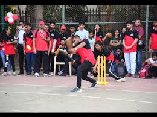
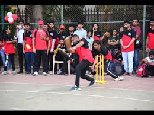

Overview
MET Bhujbal Knowledge City offers a well-maintained, spacious playground that supports holistic development through sports. The facility includes fields for cricket, football, volleyball, and more, encouraging students to stay fit and build teamwork skills.
Facilities Available
- Cricket and football grounds
- Basketball and volleyball courts
- Jogging track and open gym
- Sports equipment and coaching
- Regular intra-college tournaments
Access
All students can access the playground during morning and evening hours. Dedicated times are reserved for team practice, coaching sessions, and college matches.